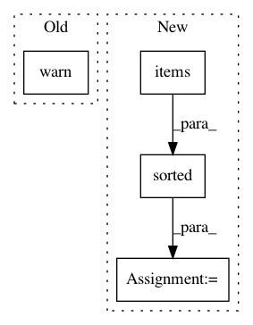

c8105b3974fba93097bd28e5ae14a27e5f56c857,ilastik/applets/objectExtraction/objectExtractionSerializer.py,SerialLabelImageSlot,deserialize,#SerialLabelImageSlot#Any#,33
Before Change
mygroup = opgroup[inner]
oplabel = innerops[int(inner)]._opLabelImage
ts = set(numpy.array(mygroup["timesteps"][:]).flat)
warnings.warn("FIXME: Not serializing label images")
// assert False, "FIXME: OpLabelImage implementation has changed, no longer has _processedTimeSteps member"
// oplabel._processedTimeSteps = ts
// oplabel._fixed = False
//
After Change
mainOperator = self.slot.getRealOperator()
opgroup = group[self.name]
for i, (_, subgroup) in enumerate( sorted(opgroup.items() ) ):
opLabel = mainOperator.getLane(i)._opLabelImage
for roiString, dataset in subgroup.items():
logger.debug("Loading labels from dataset: "{}/{}"".format( subgroup.name, dataset.name ))
// This will be a little slow because the data is passing through a numpy array
// instead of somehow directly copying the h5py datasets in their compressed form.
// We could maybe speed this up, but we"ll lose some abstraction in the cache interface.
roi = eval(roiString)
slotRoi = SubRegion( opLabel.Input, *roi )
opLabel.setInSlot( opLabel.Input, (), slotRoi, dataset[...] )
self.dirty = False
class SerialObjectFeaturesSlot(SerialSlot):
In pattern: SUPERPATTERN
Frequency: 3
Non-data size: 4
Instances
Project Name: ilastik/ilastik
Commit Name: c8105b3974fba93097bd28e5ae14a27e5f56c857
Time: 2013-03-14
Author: bergs@janelia.hhmi.org
File Name: ilastik/applets/objectExtraction/objectExtractionSerializer.py
Class Name: SerialLabelImageSlot
Method Name: deserialize
Project Name: ilastik/ilastik
Commit Name: c8105b3974fba93097bd28e5ae14a27e5f56c857
Time: 2013-03-14
Author: bergs@janelia.hhmi.org
File Name: ilastik/applets/objectExtraction/objectExtractionSerializer.py
Class Name: SerialObjectFeaturesSlot
Method Name: deserialize
Project Name: pyannote/pyannote-audio
Commit Name: 2fcc7e8c87bd3d8f44b491d1f43be7002a2db6d7
Time: 2019-04-08
Author: bredin@limsi.fr
File Name: pyannote/audio/labeling/tasks/base.py
Class Name: LabelingTaskGenerator
Method Name: _load_metadata